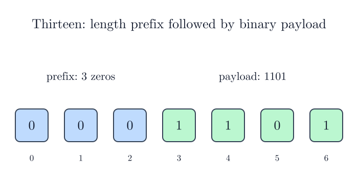
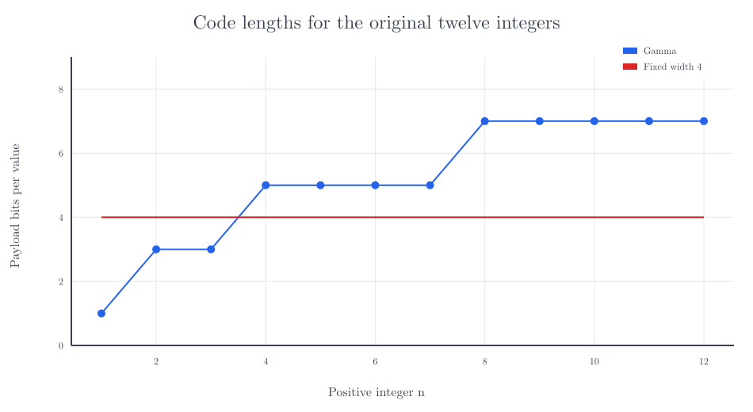
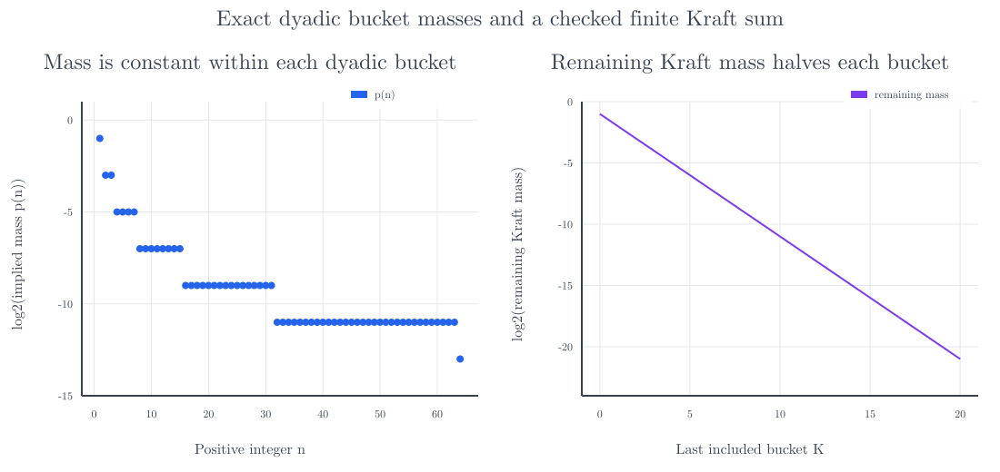
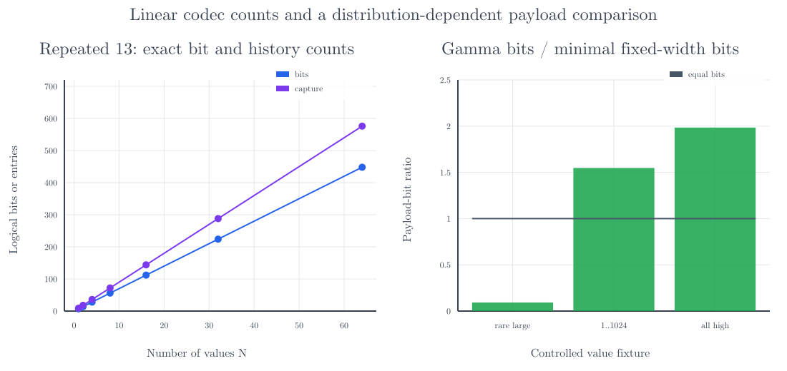
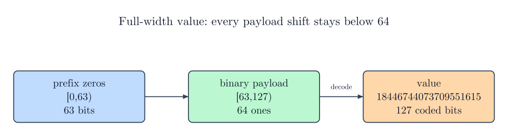

Elias Gamma: Actual Codeword Boundaries and Full-Width Integers
Abstract
Given a sequence of positive integers, we want a binary representation whose word boundaries can be recovered without separators or a fixed field width. Small values should use few bits, while occasional large values must remain representable. Elias gamma writes a zero-prefix length indicator followed by the value's binary digits. We inspect actual emitted and parsed spans, retain the original codeword and mixed-sequence examples, derive its implied probability buckets and check exact work counts. The core supports every positive uint64 value and rejects incomplete or nonbinary streams explicitly.
Begin with thirteen
The binary representation of 13 is 1101, four bits long. Its gamma word has three zeros followed by those four binary bits: 0001101. A decoder counts the initial zeros, then consumes the leading one and three further payload bits. It finishes at the exact codeword boundary. The following diagram and table read actual spans captured during encoding and decoding, rather than reconstructing a second explanation.
#include <dm/dm.hpp>
int main(){
std::filesystem::create_directories("build");
const auto e=dm::algorithms::elias_gamma_encode_trace({13});const auto d=dm::algorithms::elias_gamma_decode_trace(e.bits);
if(d.values!=e.values||e.words.at(0).payload_begin!=d.words.at(0).payload_begin||e.words.at(0).end!=d.words.at(0).end)throw std::runtime_error("span round trip failed");
std::print("Tiny: value {}; code {:?}; prefix [{},{}); payload [{},{}).\n\n",e.values.at(0),e.bits,e.words.at(0).begin,e.words.at(0).payload_begin,e.words.at(0).payload_begin,e.words.at(0).end);
std::print("| actual run | values | prefix bits | payload bits | emitted/consumed bits | captured entries |\n| :--- | ---: | ---: | ---: | ---: | ---: |\n");
for(const auto& [name,t]:std::vector<std::pair<std::string,dm::algorithms::GammaTrace>>{{"encode",e},{"decode",d}})std::print("| {} | {} | {} | {} | {} | {} |\n",name,t.work.values,t.work.zero_prefix_bits,t.work.payload_bits,t.work.bit_visits,t.captured_entries);
dm::graphics::Diagram g(64,1100);dm::graphics::DiagramNodeStyle box;box.width=1;box.height=1;box.font_size=26;
const auto& word=e.words.at(0);
for(std::size_t i=word.begin;i<word.end;++i){box.fill=i<word.payload_begin?dm::graphics::RGB{191,219,254}:dm::graphics::RGB{187,247,208};
g.node(std::to_string(i),{1.5*i,0},std::string(1,e.bits[i]),box).text({1.5*i,-1},std::to_string(i),17);}
g.text({1.5,1.5},std::format("prefix: {} zeros",word.payload_begin-word.begin),22)
.text({6.75,1.5},std::format("payload: {}",e.bits.substr(word.payload_begin,word.end-word.payload_begin)),22)
.text({4.5,3.1},"Thirteen: length prefix followed by binary payload",26).save_svg("build/elias_gamma_tiny.svg");
}Tiny: value 13; code "0001101"; prefix [0,3); payload [3,7).
| actual run | values | prefix bits | payload bits | emitted/consumed bits | captured entries |
|---|---|---|---|---|---|
| encode | 1 | 3 | 4 | 7 | 9 |
| decode | 1 | 3 | 4 | 7 | 9 |

Derive length, boundaries and the positive domain
For n>=1, let k=floor(log2 n), so 2k<=n<2(k+1). Write k zeros and then the k+1 binary digits of n, including its leading one. The total length is
The core obtains width from integer bit operations, rather than floating logarithms or a shift past the word width. For uint64 values, k ranges from zero to 63 and L from one to 127. Every encoder shift is in [0,63]. Zero has no gamma codeword in this API; it is rejected rather than silently disappearing from a sequence.
The first one determines k, and the parser then knows exactly how many payload bits remain. If two words have different k, the shorter zero prefix reaches a one while the longer still has a zero. If they have the same k, their total lengths are equal. Thus no distinct codeword is a prefix of another, and concatenated complete words have unique boundaries. Encoding preserves every payload bit, so parsing each such word recovers its original positive value.
The string API represents each bit by a literal '0' or '1' character. It uses one char per coded bit, plus string storage overhead. Bit-count savings below concern a hypothetical binary payload, not packed-byte compression performed by this API. Message framing and, for a fixed-width alternative, transmission of its chosen width/count are excluded.
Preserve the original twelve codewords and mixed sequence
The original report lists integers one through twelve and round-trips {1,2,5,3,100,7,42,1000,8,9}. Its gamma payload has 74 bits. The largest value, 1000, needs ten binary digits, so the minimal common fixed width uses 10·10=100 bits. A declared 16-bit width would use 160 bits; comparing only with that choice overstates the advantage. The bit-character string itself has 74 characters, not ten packed bytes.
#include <dm/dm.hpp>
int main(){
std::filesystem::create_directories("build");std::vector<double>x,lengths,fixed;
std::print("| n | original gamma codeword | exact length |\n| ---: | :--- | ---: |\n");
for(std::uint64_t n=1;n<=12;++n){const auto code=dm::algorithms::elias_gamma_encode_one(n);std::print("| {} | {} | {} |\n",n,code,dm::algorithms::elias_gamma_code_length(n));x.push_back(n);lengths.push_back(code.size());fixed.push_back(4);}
const std::vector<std::uint64_t> values{1,2,5,3,100,7,42,1000,8,9};const auto t=dm::algorithms::elias_gamma_encode_trace(values);
const auto s=dm::algorithms::elias_gamma_size_summary(values);const auto back=dm::algorithms::elias_gamma_decode(t.bits);
if(back!=values||s.gamma_bits!=74||s.fixed_width!=10||s.fixed_bits!=100)throw std::runtime_error("original sequence identity failed");
std::print("\nOriginal mixed sequence: {} values; {} gamma bits; minimal fixed width {}; {} fixed bits; declared 16-bit fields {} bits; round trip {}.\n",s.values,s.gamma_bits,s.fixed_width,s.fixed_bits,16*s.values,back==values);
std::print("Encoded bit characters: {}\n\n",t.bits);
std::print("| value | prefix start | payload start | word end | actual emitted word |\n| ---: | ---: | ---: | ---: | :--- |\n");
for(const auto& w:t.words)std::print("| {} | {} | {} | {} | {} |\n",w.value,w.begin,w.payload_begin,w.end,t.bits.substr(w.begin,w.end-w.begin));
auto p=dm::graphics::RPlot::create();p.line(x,lengths,"Gamma",{37,99,235}).points(x,lengths,"",{37,99,235},5).line(x,fixed,"Fixed width 4",{220,38,38})
.title("Code lengths for the original twelve integers").x_label("Positive integer n").y_label("Payload bits per value").y_limits(0,9).size(950,520).save_svg("build/elias_gamma_original.svg");
}| n | original gamma codeword | exact length |
|---|---|---|
| 1 | 1 | 1 |
| 2 | 010 | 3 |
| 3 | 011 | 3 |
| 4 | 00100 | 5 |
| 5 | 00101 | 5 |
| 6 | 00110 | 5 |
| 7 | 00111 | 5 |
| 8 | 0001000 | 7 |
| 9 | 0001001 | 7 |
| 10 | 0001010 | 7 |
| 11 | 0001011 | 7 |
| 12 | 0001100 | 7 |
Original mixed sequence: 10 values; 74 gamma bits; minimal fixed width 10; 100 fixed bits; declared 16-bit fields 160 bits; round trip true. Encoded bit characters: 10100010101100000011001000011100000101010000000000111110100000010000001001
| value | prefix start | payload start | word end | actual emitted word |
|---|---|---|---|---|
| 1 | 0 | 0 | 1 | 1 |
| 2 | 1 | 2 | 4 | 010 |
| 5 | 4 | 6 | 9 | 00101 |
| 3 | 9 | 10 | 12 | 011 |
| 100 | 12 | 18 | 25 | 0000001100100 |
| 7 | 25 | 27 | 30 | 00111 |
| 42 | 30 | 35 | 41 | 00000101010 |
| 1000 | 41 | 50 | 60 | 0000000001111101000 |
| 8 | 60 | 63 | 67 | 0001000 |
| 9 | 67 | 70 | 74 | 0001001 |

For the mixed sequence the payload saving relative to the minimal fixed width is 100−74=26 bits, or 26%. This example benefits from many small values and a few large ones. A finite corpus is not evidence that every integer sequence will obtain the same saving.
Check the implied probability buckets and Kraft sum
A codeword of length L has implied mass p(n)=2(-L(n)). In bucket 2k<=n<2(k+1), all 2k values have the same mass
Summing the geometric bucket masses over unbounded positive integers gives one, so this infinite prefix code has Kraft sum one. After bucket K, the partial sum is 1−2(-(K+1)). The finite uint64 codebook covers buckets zero through 63, giving mathematical mass 1−2-64. Binary64 arithmetic cannot resolve that final difference from one; the numerical checks below stop at K=20, where every displayed dyadic sum is exact.
The mass is a staircase in n, not a smooth inverse square. Specifically, 1/(2n²)<=p(n)<2/n², with equality on the lower bound at powers of two. Under the constructed unbounded distribution p, mean length is sum_k (2k+1)2^(-(k+1))=3 bits, equal to its entropy because -log2 p(n)=L(n). That optimality concerns this particular distribution; other sources can favour another code.
#include <dm/dm.hpp>
int main(){
std::filesystem::create_directories("build");double partial=0;std::vector<double>kvalues,tail,nvalues,log_mass;
std::print("| bucket k | first n | last n | length | per-value mass | bucket mass | cumulative mass |\n| ---: | ---: | ---: | ---: | ---: | ---: | ---: |\n");
for(unsigned k=0;k<=20;++k){const auto count=std::uint64_t{1}<<k;const auto length=dm::algorithms::elias_gamma_code_length(count);const double probability=std::ldexp(1.,-int(length)),mass=count*probability;partial+=mass;
if(length!=2*k+1||mass!=std::ldexp(1.,-int(k)-1)||partial!=1-std::ldexp(1.,-int(k)-1))throw std::runtime_error("Kraft bucket identity failed");
if(k<=8||k==10||k==15||k==20)std::print("| {} | {} | {} | {} | {:.10g} | {:.10g} | {:.12f} |\n",k,count,2*count-1,length,probability,mass,partial);
kvalues.push_back(k);tail.push_back(std::log2(1-partial));}
for(std::uint64_t n=1;n<=64;++n){nvalues.push_back(n);log_mass.push_back(-double(dm::algorithms::elias_gamma_code_length(n)));}
std::print("\nChecked through bucket 20: cumulative mass {:.12f}; remaining mass {:.12g}.\n",partial,1-partial);
auto a=dm::graphics::RPlot::create();a.points(nvalues,log_mass,"p(n)",{37,99,235},4).title("Mass is constant within each dyadic bucket").x_label("Positive integer n").y_label("log2(implied mass p(n))").y_limits(-15,1);
auto b=dm::graphics::RPlot::create();b.line(kvalues,tail,"remaining mass",{124,58,237}).title("Remaining Kraft mass halves each bucket").x_label("Last included bucket K").y_label("log2(remaining Kraft mass)").y_limits(-24,0);
dm::graphics::RLayout::create(1,2).add(a).add(b).size(1100,520).title("Exact dyadic bucket masses and a checked finite Kraft sum").fit_panels().save_svg("build/elias_gamma_kraft.svg");
}| bucket k | first n | last n | length | per-value mass | bucket mass | cumulative mass |
|---|---|---|---|---|---|---|
| 0 | 1 | 1 | 1 | 0.5 | 0.5 | 0.500000000000 |
| 1 | 2 | 3 | 3 | 0.125 | 0.25 | 0.750000000000 |
| 2 | 4 | 7 | 5 | 0.03125 | 0.125 | 0.875000000000 |
| 3 | 8 | 15 | 7 | 0.0078125 | 0.0625 | 0.937500000000 |
| 4 | 16 | 31 | 9 | 0.001953125 | 0.03125 | 0.968750000000 |
| 5 | 32 | 63 | 11 | 0.00048828125 | 0.015625 | 0.984375000000 |
| 6 | 64 | 127 | 13 | 0.0001220703125 | 0.0078125 | 0.992187500000 |
| 7 | 128 | 255 | 15 | 3.051757812e-05 | 0.00390625 | 0.996093750000 |
| 8 | 256 | 511 | 17 | 7.629394531e-06 | 0.001953125 | 0.998046875000 |
| 10 | 1024 | 2047 | 21 | 4.768371582e-07 | 0.00048828125 | 0.999511718750 |
| 15 | 32768 | 65535 | 31 | 4.656612873e-10 | 1.525878906e-05 | 0.999984741211 |
| 20 | 1048576 | 2097151 | 41 | 4.547473509e-13 | 4.768371582e-07 | 0.999999523163 |
Checked through bucket 20: cumulative mass 0.999999523163; remaining mass 4.76837158203e-07.

Check exact work and the effect of value magnitudes
For N copies of 13, each codeword contributes three prefix and four payload bits. Thus emission and parsing each visit 7N coded bits; the trace retains 7N+2N=9N logical entries. Counts exclude preflight, the parser's separate full alphabet-validation pass, copies, allocation and machine instructions. In general encoding costs O(N+B), parsing O(B) including validation, with B coded characters and N values. Ordinary output requires O(B) encoded characters or O(N) decoded values; the kernels otherwise use O(1) extra storage. Optional trace buffers add the documented retained entries.
Bit savings depend on source magnitudes. The next fixtures each contain 1,024 values: mostly ones with one 1,024; consecutive integers one through 1,024; and the constant 2^63. A rare large value makes a common fixed width expensive. When every value is large, gamma pays its length prefix every time. These deterministic fixtures test a controlled claim; they are not a sample from an assumed natural source distribution.
#include <dm/dm.hpp>
int main(){
std::filesystem::create_directories("build");std::vector<double>x,bits,capture,ratios;
std::print("| copies of 13 | prefix bits | payload bits | emitted bits | parsed bits | retained entries |\n| ---: | ---: | ---: | ---: | ---: | ---: |\n");
for(std::size_t n:{1,2,4,8,16,32,64}){const auto e=dm::algorithms::elias_gamma_encode_trace(std::vector<std::uint64_t>(n,13));const auto d=dm::algorithms::elias_gamma_decode_trace(e.bits);
if(e.work.zero_prefix_bits!=3*n||e.work.payload_bits!=4*n||e.work.bit_visits!=7*n||d.work.bit_visits!=7*n||e.captured_entries!=9*n||d.values!=e.values)throw std::runtime_error("linear count identity failed");
std::print("| {} | {} | {} | {} | {} | {} |\n",n,e.work.zero_prefix_bits,e.work.payload_bits,e.work.bit_visits,d.work.bit_visits,e.captured_entries);x.push_back(n);bits.push_back(e.work.bit_visits);capture.push_back(e.captured_entries);}
std::vector<std::uint64_t> rare(1024,1),consecutive(1024),high(1024,std::uint64_t{1}<<63);rare.back()=1024;std::iota(consecutive.begin(),consecutive.end(),1);
const std::vector<std::string> names{"rare large","1..1024","all high"};const std::vector<std::vector<std::uint64_t>> fixtures{rare,consecutive,high};
const std::array<std::size_t,3> expected_gamma{1044,17432,130048},expected_fixed{11264,11264,65536};
std::print("\n| 1024-value fixture | gamma bits | fixed width | fixed bits | ASCII bit characters | gamma/fixed bits | round trip |\n| :--- | ---: | ---: | ---: | ---: | ---: | :--- |\n");
for(std::size_t i=0;i<fixtures.size();++i){const auto s=dm::algorithms::elias_gamma_size_summary(fixtures[i]);const auto e=dm::algorithms::elias_gamma_encode_work(fixtures[i]);const auto d=dm::algorithms::elias_gamma_decode_work(e.bits);const bool ok=d.values==fixtures[i];
if(!ok||s.gamma_bits!=expected_gamma[i]||s.fixed_bits!=expected_fixed[i]||e.bits.size()!=s.gamma_bits)throw std::runtime_error("fixture size identity failed");const double ratio=double(s.gamma_bits)/s.fixed_bits;ratios.push_back(ratio);
std::print("| {} | {} | {} | {} | {} | {:.6f} | {} |\n",names[i],s.gamma_bits,s.fixed_width,s.fixed_bits,e.bits.size(),ratio,ok);}
auto a=dm::graphics::RPlot::create();a.line(x,bits,"bits",{37,99,235}).points(x,bits,"",{37,99,235},5).line(x,capture,"capture",{124,58,237}).points(x,capture,"",{124,58,237},5).title("Repeated 13: exact bit and history counts").x_label("Number of values N").y_label("Logical bits or entries").y_limits(0,720);
auto b=dm::graphics::RPlot::barplot(ratios,names,"",{22,163,74});b.line({-.4,2.4},{1,1},"equal bits",{71,85,105}).title("Gamma bits / minimal fixed-width bits").x_label("Controlled value fixture").y_label("Payload-bit ratio").y_limits(0,2.5);
dm::graphics::RLayout::create(1,2).add(a).add(b).size(1100,520).title("Linear codec counts and a distribution-dependent payload comparison").fit_panels().save_svg("build/elias_gamma_work.svg");
}| copies of 13 | prefix bits | payload bits | emitted bits | parsed bits | retained entries |
|---|---|---|---|---|---|
| 1 | 3 | 4 | 7 | 7 | 9 |
| 2 | 6 | 8 | 14 | 14 | 18 |
| 4 | 12 | 16 | 28 | 28 | 36 |
| 8 | 24 | 32 | 56 | 56 | 72 |
| 16 | 48 | 64 | 112 | 112 | 144 |
| 32 | 96 | 128 | 224 | 224 | 288 |
| 64 | 192 | 256 | 448 | 448 | 576 |
| 1024-value fixture | gamma bits | fixed width | fixed bits | ASCII bit characters | gamma/fixed bits | round trip |
|---|---|---|---|---|---|---|
| rare large | 1044 | 11 | 11264 | 1044 | 0.092685 | true |
| 1..1024 | 17432 | 11 | 11264 | 17432 | 1.547585 | true |
| all high | 130048 | 64 | 65536 | 130048 | 1.984375 | true |

Full-width values, strict streams and capture limits
For UINT64_MAX, k=63: the word contains 63 zeros and 64 payload ones, 127 characters in total. Counting zeros never needs a 64-bit shift; the encoder's largest payload shift is 63. The saved old-header sanitizer probe reaches an invalid shift exponent 64 at 263. The new implementation supports both 263 and UINT64_MAX directly.
The whole input alphabet is validated first. An unfinished zero prefix or payload is an error; trailing zeros are not padding. A prefix longer than 63 would require a value outside uint64 and raises overflow. Previously, inputs such as 01 were accepted as a smaller value, x was accepted as one, and sequence encoding silently omitted zero. Those invalid-input behaviours are corrected. Empty input remains the valid encoding of an empty sequence, and every valid legacy encoding is preserved.
An owned trace stores B bit characters, N values and N word records, so its logical retained cost is C=B+2N. Encoding checks the complete known cost before copies or emission. Decoding reserves B before owned copying, then two entries per complete word before appending its value and span. It can consume a word before reaching that quota check. Scalar fields, runtime/result temporaries, string/vector capacity and allocator bytes are excluded; the cap is not a peak-memory or CPU-time bound. It defaults to one million; zero disables only the optional quota. Arithmetic checks remain, and failure exposes no partial result. Ordinary and work-only calls have no optional capture quota or history.
#include <dm/dm.hpp>
int main(){
std::filesystem::create_directories("build");const auto maximum=std::numeric_limits<std::uint64_t>::max();const auto t=dm::algorithms::elias_gamma_encode_trace({maximum});const auto back=dm::algorithms::elias_gamma_decode_trace(t.bits);
std::print("Full range: 2^63 length {}; UINT64_MAX length {}; maximum round trip {}; capture entries {}.\n",dm::algorithms::elias_gamma_code_length(std::uint64_t{1}<<63),t.bits.size(),back.values==t.values,t.captured_entries);
std::print("Maximum spans: prefix [{},{}); payload [{},{}); actual payload ones {}.\n",t.words.at(0).begin,t.words.at(0).payload_begin,t.words.at(0).payload_begin,t.words.at(0).end,std::count(t.bits.begin()+t.words.at(0).payload_begin,t.bits.end(),'1'));
int malformed=0;for(const std::string bits:{"0","000","01","001","0100","x","0x","10x"})try{(void)dm::algorithms::elias_gamma_decode(bits);}catch(const std::invalid_argument&){++malformed;}
int zeros=0;try{(void)dm::algorithms::elias_gamma_encode_one(0);}catch(const std::invalid_argument&){++zeros;}
try{(void)dm::algorithms::elias_gamma_encode({1,0,2});}catch(const std::invalid_argument&){++zeros;}
int wide=0;try{(void)dm::algorithms::elias_gamma_decode(std::string(64,'0')+"1"+std::string(64,'0'));}catch(const std::overflow_error&){++wide;}
std::print("Malformed legacy-stream rejections {}/8; zero-value rejections {}/2; overwide-prefix rejections {}/1.\n",malformed,zeros,wide);
const auto e=dm::algorithms::elias_gamma_encode_trace({13},9),d=dm::algorithms::elias_gamma_decode_trace(e.bits,9);int caps=0;
try{(void)dm::algorithms::elias_gamma_encode_trace({13},8);}catch(const std::length_error&){++caps;}
for(std::size_t cap:{6,8})try{(void)dm::algorithms::elias_gamma_decode_trace(e.bits,cap);}catch(const std::length_error&){++caps;}
std::print("Exact encoding/decoding entries {}/{}; disabled-cap entries {}; base/one-short rejections {}/3.\n",e.captured_entries,d.captured_entries,dm::algorithms::elias_gamma_decode_trace(e.bits,0).captured_entries,caps);
std::print("Empty encoding entries {}; empty decoding values {}.\n",dm::algorithms::elias_gamma_encode_trace({}).captured_entries,dm::algorithms::elias_gamma_decode("").size());
const auto& w=t.words.at(0);dm::graphics::Diagram g(64,1100);dm::graphics::DiagramNodeStyle box;box.width=4.5;box.height=1.7;box.font_size=23;box.fill={191,219,254};
g.node("prefix",{0,0},std::format("prefix zeros\n[{},{})\n{} bits",w.begin,w.payload_begin,w.payload_begin-w.begin),box);box.fill={187,247,208};
g.node("payload",{6,0},std::format("binary payload\n[{},{})\n{} ones",w.payload_begin,w.end,w.end-w.payload_begin),box);box.fill={254,215,170};
g.node("value",{12,0},std::format("value\n{}\n{} coded bits",w.value,w.end-w.begin),box).edge("prefix","payload").edge("payload","value","decode")
.text({6,2.6},"Full-width value: every payload shift stays below 64",26).save_svg("build/elias_gamma_boundaries.svg");
}Full range: 2^63 length 127; UINT64_MAX length 127; maximum round trip true; capture entries 129. Maximum spans: prefix [0,63); payload [63,127); actual payload ones 64. Malformed legacy-stream rejections 8/8; zero-value rejections 2/2; overwide-prefix rejections 1/1. Exact encoding/decoding entries 9/9; disabled-cap entries 9; base/one-short rejections 3/3. Empty encoding entries 0; empty decoding values 0.

What the examples establish
Actual spans make the self-delimiting boundary visible, and the original codewords and 74-bit mixed payload remain unchanged. Exact integer width handles the full positive uint64 domain. Kraft buckets explain the piecewise probability implied by the code, while controlled fixtures show that payload savings depend on magnitudes. Strict parsing and explicit history accounting make incomplete input and resource limits visible; the character-string representation still needs a separate packing and framing design for a compact byte-level format.
Reference
- P. Elias (1975), “Universal codeword sets and representations of the integers”, IEEE Transactions on Information Theory 21(2), 194–203, [doi:10.1109/TIT.1975.1055349](https://doi.org/10.1109/TIT.1975.1055349). [Original paper copy](https://www.u-cursos.cl/ingenieria/2017/2/CC7310/1/material_docente/bajar?bajar=1&id=1879595). This implementation uses zero-prefixed gamma words for positive uint64 values, a strict complete bit-string parser and actual word-span capture.